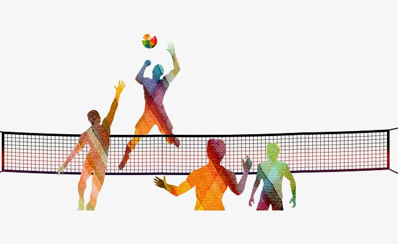
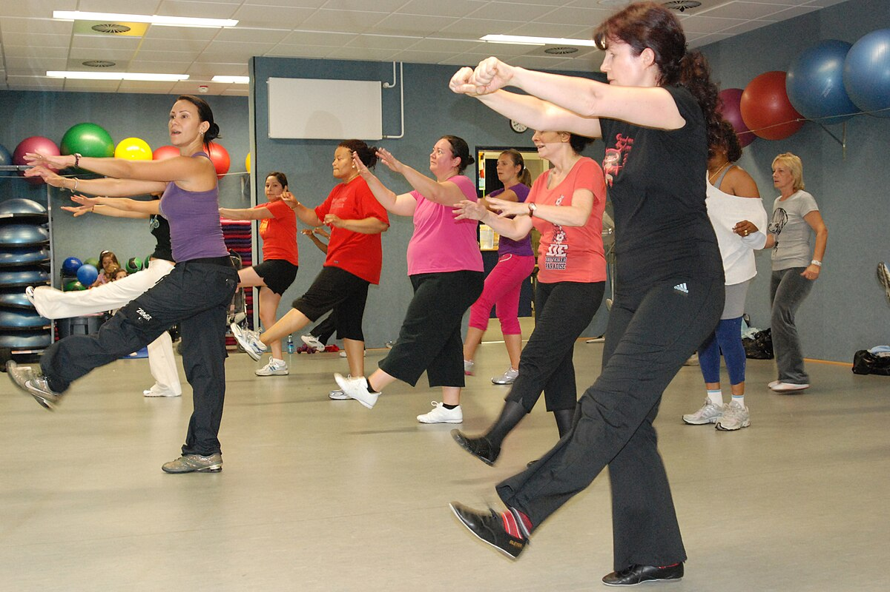
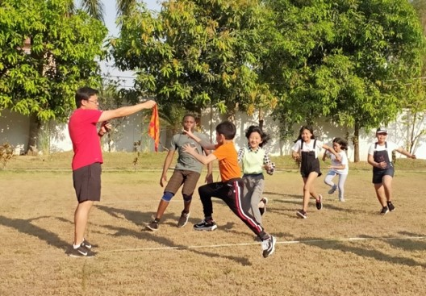
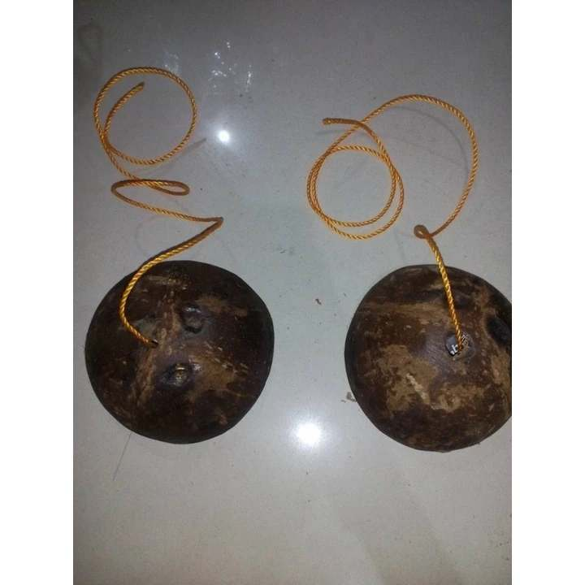

Volleyball • Swimming • Aerobics/Zumba • Agawan Panyo • Kadang-Kadang
Volleyball
Guidelines • Rules • Scoring

There are six competing teams, with two team representatives per program. Each team must have a minimum of 8 and a maximum of 12 players. Only 6 players from each team are allowed inside the court at a time.
All teams, consisting of their official team members, must arrive at the court at least 15 minutes before their scheduled game time.
All teams, consisting of their official team members, must arrive at the court at least 15 minutes before their scheduled game time.
The tournament format will follow a Single Elimination or Knock-out system.
Officials shall inspect players uniforms to ensure that opposing teams wear contrasting colors, jersey numbers are not duplicated, and no jewelry is worn. Assigned team colors must be strictly followed.
Each game in the qualifying round will consist of three sets. The first and second sets are played to 25 points, while the third set is played to 15 points. A team must win two sets to be consider the winner.
Championship matches will follow a best of five set. The first team to win three sets will be declared the champion. The first four sets are played to 25 points, and if the score is tied at two sets each, a fifth set will be played to 15 points.
All participants must be registered representatives of their respective programs (Bachelor of Science in Computer Science, Bachelor of Science in Information Systems in collaboration with Associate in Computer Technology, and Bachelor of Library and Information Science). Teams with unregistered players will be disqualified.
If the game is tied at 24-24, or 14-14 in the fifth set, the set continues till one team builds a two-point lead over the other.
Each rally is played for a point and the team that wins the rally and scores a point gets to serve for the next point.
All officials and players are required to report to the court at least 15 minutes before the scheduled game time. Failure to appear within this time frame will result in forfeiture of the game.
Any form of unsportsmanship such as disrespectful behavior, verbal abuse, taunting, physical aggression, or refusal to follow instructions towards team members, opponents, officials, or the organizing committee will result in immediate ejection from the current game and/or suspension for the next game.
The serve must be made from behind the end line and the server may not step on or over the line until after making contact with the ball.
When a team gains the right to serve, all players must rotate one position clockwise before serving. Failure to rotate correctly will result in a rotation violation.
Players are not allowed to scoop, hold, or lift the ball, and must avoid touching the net at any time.
A player must not touch the ball twice in a row, except when making consecutive contacts during blocking action.
When two players contact the ball simultaneously during receiving, it is counted as two separate hits.
Teams are allowed a maximum of three consecutive touches. A single player may not touch the ball twice in succession. After the third touch, the ball must be sent over to the opponent’s court.
Uses the rally point system, where a point is awarded on every rally regardless of which team served.
A set is won by the first team to reach 25 points with at least a 2-point lead. If the score reaches 24–24, play continues until one team leads by two points.
Matches are played in a best-of-three or best-of-five sets, with the deciding third or fifth set played to 15 points, also requiring a 2-point lead.
Swimming
Guidelines • Rules • Categories
Each program must have two male and one female representative in every category.
The tournament format will follow a single-elimination or knockout System.
The teams should arrive 15 minutes before the start of the tournament.
Upon arrival, the teams will be given a designated area where they can stay for the whole duration of the tournament (Tables and Chairs near the swimming grounds)
All races are held in a 30-meter pool.
There are three swimming categories, which are Freestyle 30m, Backstroke 30m, and Breaststroke 30m.
Each team will be given designated lanes where they will swim.
Swimmers' swimming caps should follow the color of their team.
Timers will be provided. one is to one ratio to monitor the exact finish time of the swimmer.
A warm-up will be provided by the Tournament officiators.
The referee signals with three whistle blows:
-Step onto the starting block (or poolside).
-Enter the water and return to the wall.
-Begin gliding and stroking.
All front and backstroke races must begin in the water.
Diving is strictly prohibited for safety reasons.
Swimmers must finish in the same lane they started in.
Pulling on lane ropes is not allowed.
Proper swimming attire is required in compliance with PE Department rules.
A false start, defined as leaving the starting platform before the start signal, shall result in immediate disqualification.
Failure to conduct/participate in warm-up will result to disqualification
Unsportsmanlike conduct by swimmers, teams, or officials will lead to suspension or ejection. (e.g, bumping, pulling, kicking other players)
Any swimmer obstructing or interfering with another will be disqualified.
Improper turns will result in disqualification. Turn judges must inform the starter judge for the decision to be valid.
Devices that enhance speed, buoyancy, or endurance (e.g., fins, paddles) are prohibited.
Criteria/Finishes
In Freestyle, the finish shall be executed on the front, with one hand making contact with the wall.
In Backstroke, the finish shall be made while the swimmer remains on the back, with at least one hand contacting the wall.
In Breaststroke, the finish shall be executed with both hands touching the wall simultaneously and on the same horizontal plane.
Note: Failure to follow these rules will result in disqualification.
In the qualifying match, swimmers must complete 30 meters according to their category.
In the final match, swimmers must complete 60 meters according to their category.
The players with the fastest times in the 30-meter qualifying match will advance to the finals.
The player with the fastest time in the 60-meter final will be declared the champion.
Aerobics / Zumba
History • Guidelines • Rules • Judging Criteria

Aerobics – A form of exercise involving continuous, rhythmic movements designed to improve heart and lung health. It became widely popular in the 1980s through group fitness classes and workout videos.
Zumba – A dance-fitness program created in the 1990s by Alberto “Beto” Perez in Colombia. It combines aerobic exercise with Latin and international dance styles such as salsa, reggaeton, and merengue.
Purpose – To make fitness fun, energetic, and engaging while promoting health, coordination, and stamina.
The contest is open to all officially registered participants, with one (1) group entry per team consisting of 15–30 members.
Participants must wear comfortable workout attire and rubber shoes for safety. Outfits are encouraged to follow their assigned team color for uniformity.
All participants must be physically fit to perform Zumba routines.
Props may be used but should be simple, safe, and non-distracting from the routine.
Each participant/group must bring their own water and stay hydrated.
Warm-up before and cool-down after the performance are required for safety.
All participants must observe sportsmanship, punctuality, and respect throughout the event.
Only registered participants are allowed to join the contest. Violation will result in immediate disqualification.
All teams must be present at the venue before the scheduled time. Latecomers will receive a 5-point deduction or may not be allowed to perform.
Each group must present a Zumba routine lasting 15–20 minutes (including entrance and exit). For every minute under or over the limit, a 3-point deduction will be applied.
Music must be upbeat, school-appropriate, and submitted beforehand (USB/flash drive or as required by organizers). Failure to submit proper music may result in performance delays or disqualification.
Participants must remain within the designated performance area. Stepping outside the boundary will result in a 5-point deduction.
Dangerous stunts or acrobatics ( e.g. lifting, tumbling , human pyramid, throwing of members and flips) that may cause accidents are strictly prohibited.Violation will result in immediate disqualification.
Substitution of members during the contest is not allowed unless permitted by the organizers.Unauthorized substitutions will result in disqualification.
The judges' decision is final and irrevocable. Any disrespect or protest against the judges/organizers will result in disqualification.
Energy, Endurance & Expression - 40%
Strong enthusiasm, liveliness, and stamina are shown.
Energy is sustained from start to finish with facial expressions that enhance performance.
Execution, Form & Synchronization 35%
Accuracy and correctness of movements. proper posture and alignment, and strong coordination with the group.
Creativity & Choreography - 15%
Steps are original, well-arranged, and make good use of space.
Routine remains fresh and engaging.
Overall Impact - 10%
Confidence, audience connection, and lasting impression of the performance.
TOTAL: 100%
Agawan Panyo
Guidelines • Safety • Violations • Scoring

There will be six teams competing, and each team must have a minimum of eight and a maximum of twelve players.
Players must only move when their turn is called.
The panyo should be clearly visible and placed at the center.
Players must return to their line after completing their turn.
Good sportsmanship, such as congratulating the opponent, is encouraged.
Players should wear comfortable clothing and proper running shoes.
Pushing, tripping, or any form of physical contact other than tagging will result in disqualification.
Tags must be light taps, not slaps or grabs.
The first offense will result in a warning. Repeated offenses will result in a one-point deduction.
Players must wear appropriate shoes and attire to ensure safety while running.
The facilitator may pause or stop the game in case of disputes or safety concerns.
Leaving the line before being called will result in a one-point deduction.
Grabbing the panyo without being the chosen player will result in a one-point deduction.
Physical aggression or disrespect toward other players or officials will result in immediate disqualification of the player.
Repeated violations will result in a one-point deduction or possible team disqualification.
Cheating or distracting the opponent is not allowed. A one-point deduction will be applied.
Disrespecting the referee or facilitator’s decision will result in a one-point deduction.
Teams are expected to cheer positively. Negative remarks will result in a one-point deduction.
The game will follow a single-elimination format (with a lucky advantage draw for the three semifinal players).
One point is awarded to the team whose player retrieves the panyo and returns safely.
If both players are tagged or commit a foul, no points are awarded.
For any rule violation, one point will be deducted.
The team that reaches fifteen points first will be declared the winner.
Kadang-Kadang
Guidelines • Rules • Rounds

All competing teams are required to arrive at the venue at least fifteen (15) minutes prior to the scheduled start time.
Each team must have all members present before the game starts. Failure to have a complete team will result in disqualification. Player substitutions are not allowed, except in cases of emergencies or accidents and with the approval of the facilitators.
Each team must designate one (1) leader who will represent the team during announcements and clarifications.
The game will begin once the facilitators give the official signal to start.
Players of each team must form a line at the designated starting point before the game begins.
When the game begins, the first player must walk from the starting line to the designated stopping point using the coconut shell stilts, then return to the starting line.
Upon returning, the player must tap the hand of the next teammate and pass them the pair of coconut shell stilts to continue the relay. This process is repeated until all players have completed their turn.
The first team to have all members finish the relay shall be declared the winner.
Each team will be provided with one (1) pair of coconut shell stilts for the duration of the game. If a pair becomes damaged during play, the facilitators will supply a replacement pair. The player must restart their turn from the starting line after receiving the replacement.
Questions and clarifications will only be entertained before the game begins.
The facilitators’ decision is final and must be respected by all participants.
There are six competing teams, with two representatives per program. Each team must have a minimum of 4 players and a maximum of 6 players. Only 4 players from each team are allowed to participate at a time in the designated playing area.
Each program is required to form two teams, with a minimum of four (4) players each, resulting in a total of six (6) participating teams. These teams will officially represent their respective program throughout the single-elimination tournament. Failure to meet the minimum number of players will result in disqualification.
Players must wear comfortable clothing (e.g., t-shirt, dry fit) and pants (e.g., shorts, PE pants, jogging pants). The game is played barefoot, and gloves must be worn to protect hands from rope burns.
Before the game begins, players should form two (2) parallel lines, leaving enough distance between them based on the available space. These lines will serve as the starting and finish lines.
For each team, the first player stands at the starting line while the remaining players line up behind, ready for their turn.
On the signal “Get set,” the first player prepares with the coconut shell stilts.
Each team is allowed a maximum of five (5) errors (falls). A team that exceeds this limit will automatically lose the match.
At the signal “Go,” the first player mounts the stilts and begins walking.
After reaching the mark, the player steps off the stilts, hands them to the next player, and the process repeats until all players have finished.
All participants must be registered representatives of their respective programs (Bachelor of Science in Computer Science, Bachelor of Science in Information Systems in collaboration with Associate in Computer Technology, and Bachelor of Library and Information Science). Teams with unregistered players will be disqualified.
The tournament shall follow a single-elimination format with a total of three (3) rounds: